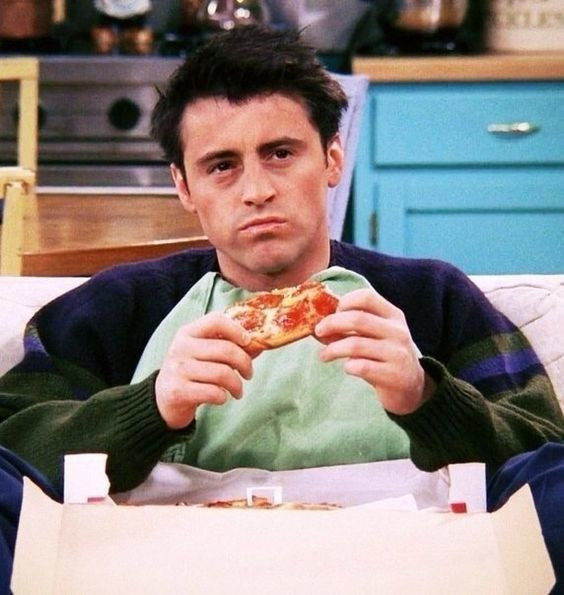
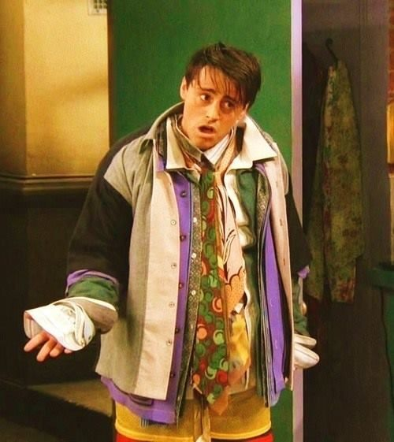

Conheça o Joey Tribbiani
Joey Tribbiani é conhecido por seu jeito divertido, descontraído e extremamente carismático. Em Friends, ele conquista o público com seu humor espontâneo, sua simplicidade e suas reações engraçadas em diferentes situações do cotidiano.
Apaixonado pela carreira de ator, Joey passa boa parte da série tentando crescer profissionalmente. Mesmo enfrentando dificuldades e momentos frustrantes, ele nunca desiste dos seus sonhos e mantém uma atitude positiva diante dos desafios.

Sua personalidade é marcada pela lealdade e pelo grande coração. Joey está sempre disposto a ajudar os amigos, demonstrando carinho e companheirismo em diversos momentos da série. Sua amizade com Chandler Bing é uma das conexões mais fortes e divertidas do grupo.
Além disso, Joey é conhecido pelo seu jeito inocente e muitas vezes ingênuo, o que cria cenas extremamente engraçadas e memoráveis. Mesmo não sendo o personagem mais intelectual, ele compensa isso com sua sinceridade, empatia e energia positiva.

Com seu humor leve, frases marcantes e personalidade cativante, Joey se tornou um dos personagens mais queridos de Friends. Sua autenticidade e seu jeito acolhedor fazem com que ele continue conquistando fãs até hoje.